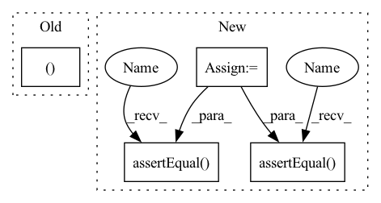

Pattern ID :12845
Before Change
self.server.wait_for_ready(num_retries=1)
// Run perf analyzer
throughput_record, latency_record = perf_client.run()
self.perf_mock.assert_perf_analyzer_run_as(
[PERF_BIN_PATH, "-m", TEST_MODEL_NAME])
self.server.stop()After Change
test_latency_output = "Avg latency: 5000 ms\n\n\n\n"
self.perf_mock.set_perf_analyzer_result_string(test_latency_output)
perf_tags = [PerfLatency]
records = perf_analyzer.run(perf_tags)
self.assertEqual( len(records), 1)
self.assertEqual(records[0].value(), 5000)
// Test throughput parsing
test_throughput_output = "Throughput: 46.8 infer/sec\n\n\n\n"
self.perf_mock.set_perf_analyzer_result_string(test_throughput_output)
perf_tags = [PerfThroughput]
records = perf_analyzer.run(perf_tags)
self.assertEqual(len(records), 1)
self.assertEqual(records[0].value(), 46.8)
// Test parsing for both
test_both_output = "Throughput: 0.001 infer/sec\nAvg latency: 3.6 ms\n\n\n\n"
self.perf_mock.set_perf_analyzer_result_string(test_both_output)
perf_tags = [PerfLatency, PerfThroughput]
records = perf_analyzer.run(perf_tags)
self.assertEqual( len(records), 2)
self.assertEqual(records[0].value(), 3.6)
self.assertEqual(records[1].value(), 0.001)
// Test exception handlingIn pattern: SUPERPATTERN
Frequency: 3
Non-data size: 4
Instances Fragment ID: 43492758
Project Name: triton-inference-server/model_analyzer
Commit Name: c56ce95ea91dc842faf12a9f8b8da0075734f4a1
Time: 2020-11-24
Author: asramesh@nvidia.com
File Name: tests/test_perf_analyzer.py
M Class Name: TestPerfAnalyzerMethods
N Class Name: TestPerfAnalyzerMethods
M Method Name: test_run(2)
N Method Name: test_run(2)
M Parent Class: trc.TestResultCollector
N Parent Class: trc.TestResultCollector
M File Name: tests/test_perf_analyzer.py
N File Name: tests/test_perf_analyzer.py
M Start Line: 110
M End Line: 139
N Start Line: 110
N End Line: 155
Before Change
def testCifar100CorruptedDatasetShape(self):
super(Cifar100CorruptedDatasetTest, self)._testDatasetSize(
ub.datasets.Cifar100CorruptedDataset,
(32, 32, 3 ),
splits=["test"],
corruption_type="brightness",
severity=1)After Change
def testCifar100CorruptedDatasetShape(self):
batch_size_splits = {"test": 5}
for split, bs in batch_size_splits.items():
dataset_builder = ub.datasets.Cifar100CorruptedDataset(
split=split,
corruption_type="brightness",
severity=1)
dataset = dataset_builder.load(batch_size=bs).take(1)
element = next(iter(dataset))
features = element["features"]
labels = element["labels"]
features_shape = features.shape
labels_shape = labels.shape
self.assertEqual( features_shape, (bs, 32, 32, 3))
self.assertEqual( labels_shape, (bs,))
if __name__ == "__main__":
tf.test.main() Fragment ID: 43492692
Project Name: google/uncertainty-baselines
Commit Name: e71008f3b738c27c13f65a18058ce978d3dd596a
Time: 2021-06-15
Author: znado@google.com
File Name: uncertainty_baselines/datasets/cifar100_corrupted_test.py
M Class Name: Cifar100CorruptedDatasetTest
N Class Name: Cifar100CorruptedDatasetTest
M Method Name: testCifar100CorruptedDatasetShape(1)
N Method Name: testCifar100CorruptedDatasetShape(1)
M Parent Class: parameterized.TestCase
N Parent Class: parameterized.TestCase,ub.datasets.DatasetTest
M File Name: uncertainty_baselines/datasets/cifar100_corrupted_test.py
N File Name: uncertainty_baselines/datasets/cifar100_corrupted_test.py
M Start Line: 28
M End Line: 33
N Start Line: 27
N End Line: 43
Before Change
self.server.wait_for_ready(num_retries=1)
// Run perf analyzer
throughput_record, latency_record = perf_client.run()
self.perf_mock.assert_perf_analyzer_run_as(
[PERF_BIN_PATH, "-m", TEST_MODEL_NAME])
self.server.stop()After Change
test_latency_output = "Avg latency: 5000 ms\n\n\n\n"
self.perf_mock.set_perf_analyzer_result_string(test_latency_output)
perf_tags = [PerfLatency]
records = perf_analyzer.run(perf_tags)
self.assertEqual( len(records), 1)
self.assertEqual(records[0].value(), 5000)
// Test throughput parsing
test_throughput_output = "Throughput: 46.8 infer/sec\n\n\n\n"
self.perf_mock.set_perf_analyzer_result_string(test_throughput_output)
perf_tags = [PerfThroughput]
records = perf_analyzer.run(perf_tags)
self.assertEqual( len(records), 1)
self.assertEqual(records[0].value(), 46.8)
// Test parsing for both
test_both_output = "Throughput: 0.001 infer/sec\nAvg latency: 3.6 ms\n\n\n\n" Fragment ID: 43492754
Project Name: triton-inference-server/model_analyzer
Commit Name: c56ce95ea91dc842faf12a9f8b8da0075734f4a1
Time: 2020-11-24
Author: asramesh@nvidia.com
File Name: tests/test_perf_analyzer.py
M Class Name: TestPerfAnalyzerMethods
N Class Name: TestPerfAnalyzerMethods
M Method Name: test_run(2)
N Method Name: test_run(2)
M Parent Class: trc.TestResultCollector
N Parent Class: trc.TestResultCollector
M File Name: tests/test_perf_analyzer.py
N File Name: tests/test_perf_analyzer.py
M Start Line: 110
M End Line: 139
N Start Line: 110
N End Line: 155
Before Change
("hello", "this", None),
("is", "interesting", ""),
("this", "is_24", None),
("paradise", None, None ),
],
)
After Change
self.assertEqual(list(c), ["abc", "de", "", "f", None])
def base_test_string_split_methods(self):
s = ["a b c", "1,2,3", "d e f g h", "hello.this.is.very.very.very.very.long"]
c = self.ts.Column(s)
self.assertEqual(list(c.str.split(".")), [v.split(".") for v in s])
self.assertEqual( list(c.str.split()), [v.split() for v in s])
self.assertEqual( list(c.str.split(",")), [v.split(",") for v in s])
def base_test_string_categorization_methods(self):
// isalpha/isnumeric/isalnum/isdigit/isdecimal/isspace/islower/isupper
self.assertEqual( Fragment ID: 43492760
Project Name: facebookresearch/torcharrow
Commit Name: bc82e34a52ecc0d8a17fcdb5b6ab3a0ab66871c4
Time: 2021-10-13
Author: wxie@fb.com
File Name: torcharrow/test/test_string_column.py
M Class Name: TestStringColumn
N Class Name: TestStringColumn
M Method Name: base_test_string_split_methods(1)
N Method Name: base_test_string_split_methods(1)
M Parent Class: unittest.TestCase
N Parent Class: unittest.TestCase
M File Name: torcharrow/test/test_string_column.py
N File Name: torcharrow/test/test_string_column.py
M Start Line: 33
M End Line: 43
N Start Line: 32
N End Line: 36